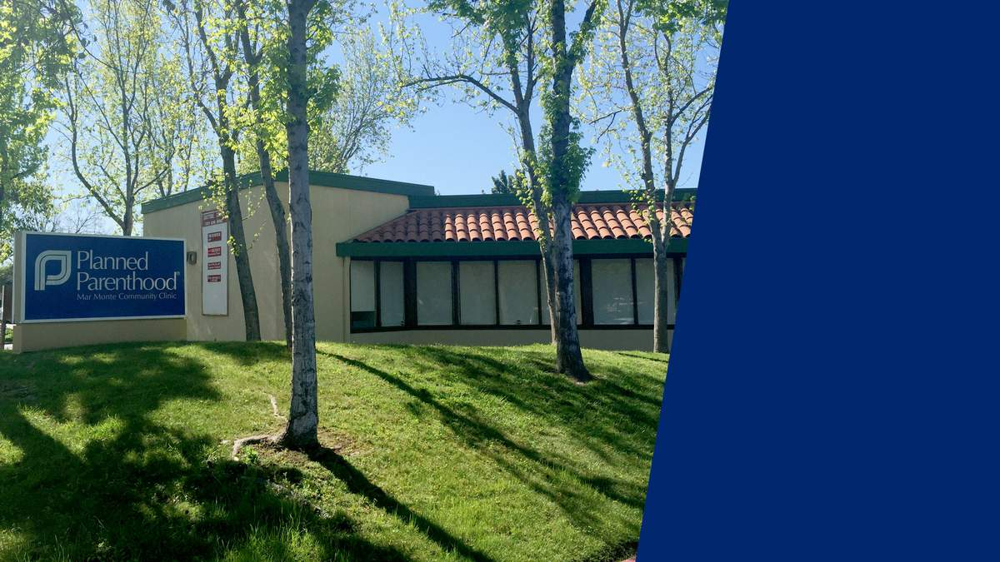
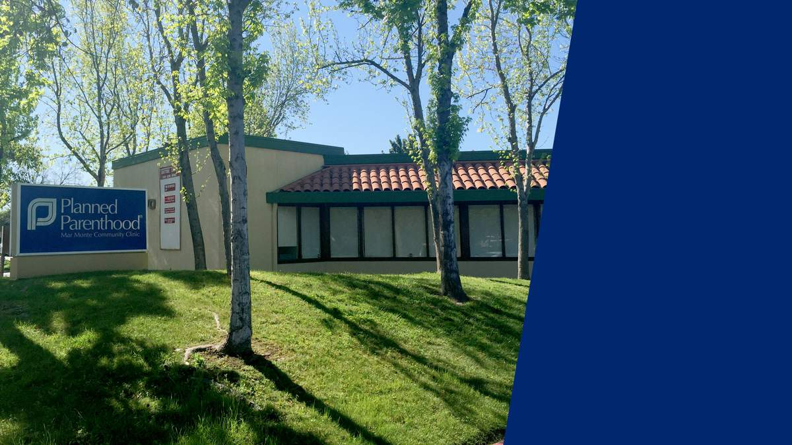
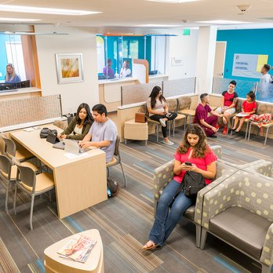
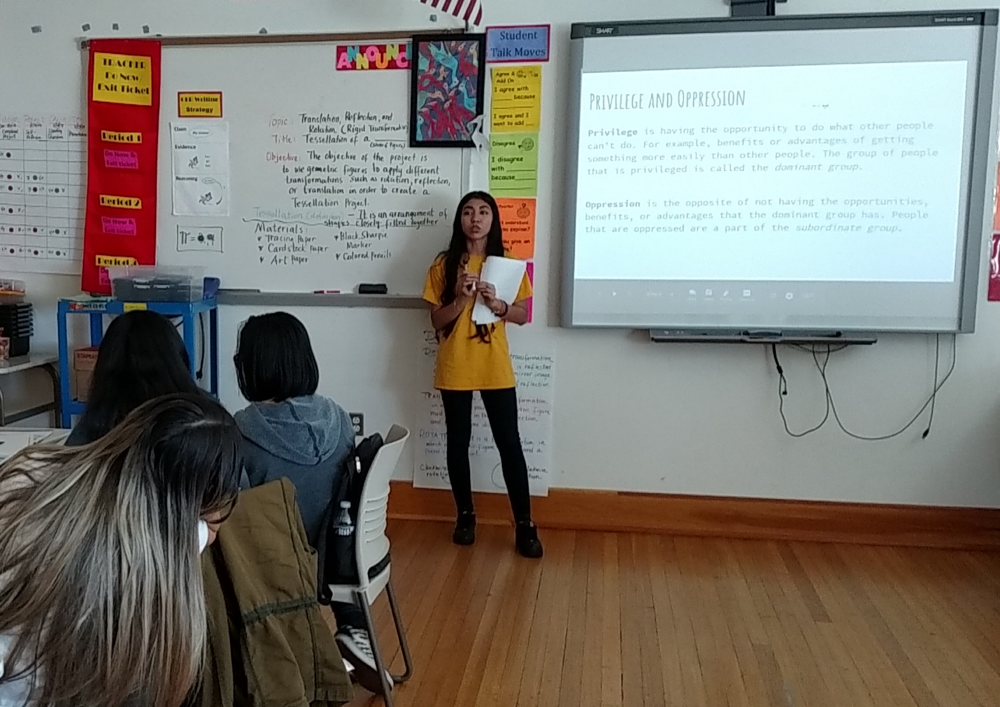
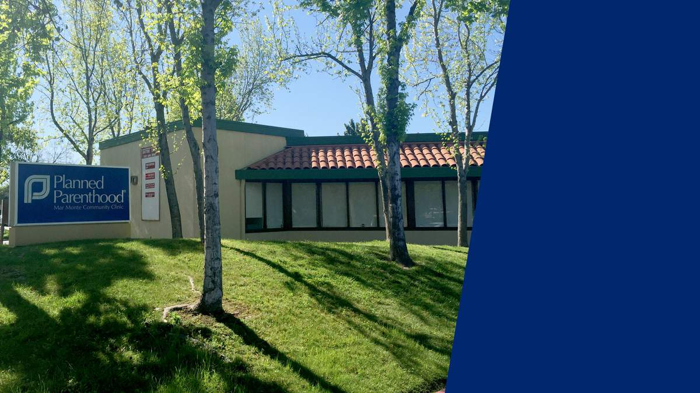
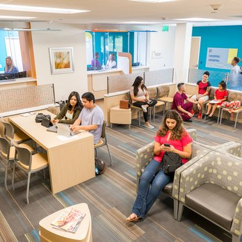
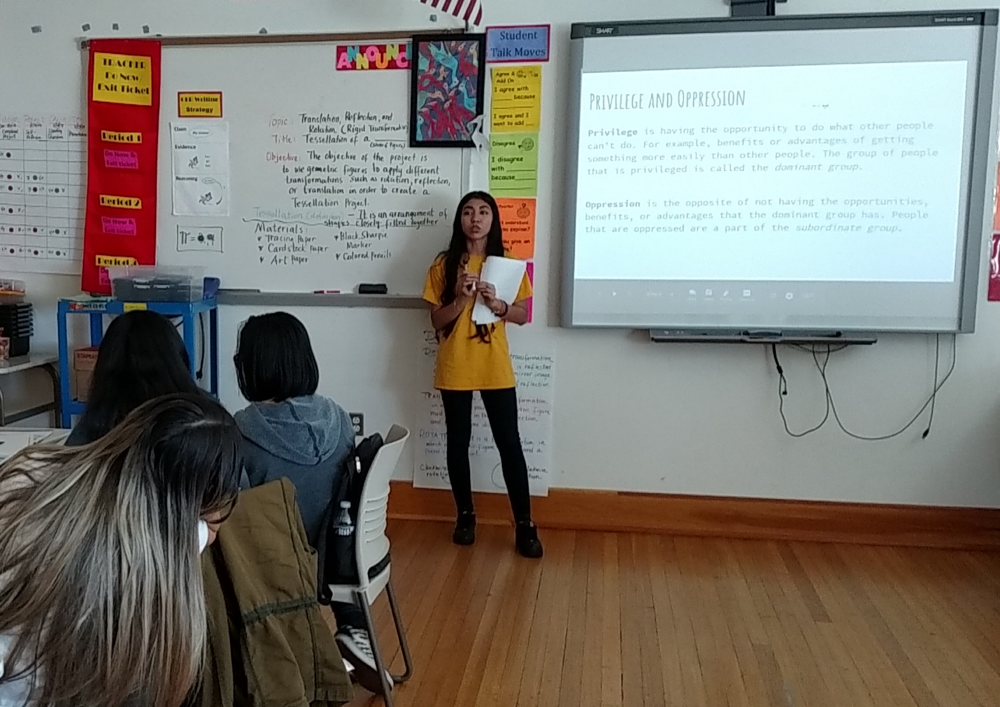

Agam Panjeta
I am a dedicated and ambitious individual currently pursuing a major in Biology with a minor in Computer Science, embarking on the exciting journey of becoming a general surgeon. Passionate about merging the worlds of medicine and technology, I am driven by a relentless curiosity to explore innovative approaches in healthcare. As a first-year student, my academic pursuits reflect my commitment to a holistic education that combines the life sciences with the transformative potential of computer science.
My professional journey has been deeply influenced by my desire to make a meaningful impact on public health. For the past two years, I have been actively involved with the Santa Clara County Public Health Department, working in a harm reduction clinic. This experience has provided me with invaluable insights into the complexities of public health, allowing me to witness firsthand the intersection of biology, community engagement, and policy implementation. Working in this dynamic environment has honed my interpersonal skills, as I collaborated with a diverse team to develop and implement strategies that promote safer practices and enhance community well-being.
In parallel with my work in harm reduction, I have also served as a Peer Advisor at Planned Parenthood Mar Monte for the past two years. This role has been particularly rewarding, allowing me to support individuals in making informed decisions about their reproductive health. It has been a privilege to contribute to an organization that champions reproductive rights and health education. As a Peer Advisor, I've developed strong communication skills, providing compassionate and non-judgmental guidance to individuals seeking information and support.
My commitment to the healthcare field is not solely focused on immediate interventions but extends to fostering preventive measures and education. This aligns seamlessly with my aspiration to become a general surgeon, where I can leverage my background in biology and complement it with the problem-solving capabilities gained through my minor in computer science. I believe that a well-rounded understanding of both the biological and technological aspects of medicine will position me to contribute significantly to the evolving landscape of healthcare.
Looking ahead, I am excited about the possibilities that lie in merging my passion for biology and computer science within the field of surgery. I envision myself utilizing cutting-edge technologies to enhance surgical precision and patient outcomes. The experiences gained in harm reduction and reproductive health advocacy have instilled in me a deep sense of empathy and cultural competence, values that I intend to carry forward into my future medical practice.
In addition to my academic and professional pursuits, I am an avid advocate for diversity and inclusion in healthcare. I actively participate in campus organizations that promote these values, recognizing the importance of fostering a healthcare system that is reflective of the diverse communities it serves.
As I navigate through my academic journey and accumulate experiences in the healthcare sector, my goal remains clear – to contribute meaningfully to the field of surgery, addressing the health needs of individuals and communities with compassion, innovation, and a commitment to social justice.
Experience
Outreach Specialist
• Worked with homeless people that have been addicted to harmful substances
• Have been Harm Reduction Certified
• Have been CPR certified
Assistant Manager
• Would take on the manager's responsibilites when they weren't there or we were extremely busy with multiple students
• Would allocate tasks to other instructors when they had nothing to do
• Would work with students and teach them new or difficult concepts in math or reading
Peer Advisor
• Worked in neighborhoods with high teen pregnancy rates
• Would educate at risk teens about safer sex practices
• Gave presentations at local highschools, middleschools, and clubs
• Trained on safer sex practices by medical professionals
Education
University of California Riverside
Portfolio
 



 